Synthetic Aperture Radar (SAR) Image Formation Equations¶
References¶
‘Performance Limits for Synthetic Aperture Radar’, 2nd edition, Armin W. Doerry, Sandia National Laboratory Report SAND2006-0821.
‘Synthetic Aperture Radar Mode Constraints’, 7-May-2007, Matthew J. Renaud (Boeing)
‘Radar Handbook’, 2nd edition, Merrill Skolnik
The Radar Range Equation¶
The following equation is the standard equation used by WSF to compute the received power from a single pulse of a radio frequency signal that is transmitted, reflects of an object and is then received. This does not assume the transmitter and receiver are co-located, and does not account for any additional signal processing techniques such as pulse compression or integration of multiple pulses:
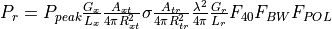
where:
Variable |
WSF source |
Description |
|---|---|---|
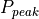 |
transmitter power |
The peak transmitted power |
|
transmitter frequency or wavelength |
The wavelength of the radiated signal |
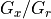 |
transmitter / receiver antenna_pattern |
The gain of the transmitter and receiver antennas |
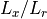 |
transmitter / receiver internal_loss |
The internal losses within the transmitter and receiver |
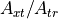 |
transmitter attenuation_model |
The one-way atmospheric attenuation factor (0..1) computed by the attenuation mode. |
|
Computed |
The range from the transmitter-to-target and target-to-receiver. |
|
The radar cross section of the target (which could be the target or a ‘resolution cell’). |
|
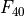 |
transmitter propagation_model |
The pattern propagation factor that accounts for the constructive and destructive interference between the direct and indirect reflections. |
|
The factor that accounts for bandwidth mismatches between the bandwidth of the transmitted signal and the bandwidth of the receiver. This is primarily for interactions between radar transmitters and passive RF receivers, or jammers and radar receivers. It is not intended to capture the effects of non-ideal matched filters in a system. |
|
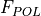 |
transmitter / receiver polarization |
The factor that accounts for the polarization mismatch of the transmitted signal and the receive antenna. |


For a SAR, the transmitter and receiver are co-located, so 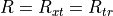 and 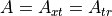. Also, the gain of the transmit and receive antennas will be assumed identical, so 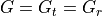. Furthermore, the following will be assumed:
There are no indirect signals to interfere with the main signal. Therefore 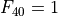.
The bandwidth of the receiver has been established to capture the full bandwidth of the transmitted signal. Therefore, 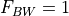.
The polarization of the received signal is the same as the polarization of the transmitted signal. Therefore, 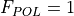.
If we also define the total atmospheric attenuation loss as:

With the above assumptions, we get the familiar equation for power received from a single pulse, where the transmitter and receiver are co-located:
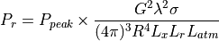
This is the same as equation (1) in reference 2, noting that:
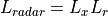
and that equation (8) has been used to replace  :
:
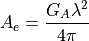
Further note that reference 2 goes on to represent the effective aperture as a product of the actual aperture area multiplied by an ‘aperture efficiency’. We will not perform that step here and assume that any aperture efficiency has been represented in the WSF antenna_pattern.
The received signal must compete with the noise present within the system. WSF computes noise power using the following:
Variable |
WSF source |
Description |
|---|---|---|
|
Internal constant |
Boltzmann’s constant (1.3806505E-23 J/deg-K) |
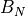 |
receiver bandwidth |
The bandwidth of the receiver. If the bandwidth was not specified AND if the transmitter pulse_width is specified, the bandwidth will be computed as (1 / pulse_width) (i.e. a matched filter will be assumed). |
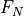 |
receiver noise_figure |
The receiver noise figure (default 1.0) |
|
Computed |
The noise power. |
|
Internal constant |
The standard temperature (290 deg-K) |


The receiver noise at the antenna port is computed as:
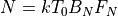
(Note: Section 2.6 in reference 1 describes other forms of computing the noise power, but these are primarily for surface-based systems.)
The signal-to-noise ratio for a single pulse at the antenna port is then:

(This is the same as equation (5) in reference 2, with the substitutions noted above.)
A SAR utilizes two signal processing techniques to increase the effective SNR in the image.
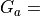 SNR gain due to azimuth processing (coherent pulse integration).
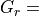 SMR gain due to range processing (pulse compression)
This will result in the signal-to-noise ratio a target within the image to be:
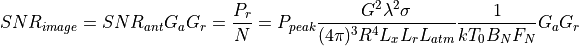
(This is the same as equation (11) in reference 2, with the substitutions noted above.)
Azimuth Processing Gain (Coherent Pulse Integration)¶
The creation of a SAR image involves the collection of a large number of pulses coherently over some duration of time that is suitable for producing an image of the desired quality.
Variable |
WSF source |
Description |
|---|---|---|
|
transmitter pulse_repetition_frequency |
The pulse repetition frequency |
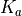 |
doppler_filter_broadening_factor |
|
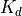 |
doppler_foldover_margin_factor |
|
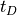 |
dwell_time or computed |
The dwell time, or image collection time. |
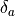 |
resolution or computed |
The desired azimuth resolution. |
|
The vehicle velocity vector. |
|
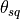 |
computed |
The ‘squint angle’, defined as the angle between the velocity vector and the line-of-sight vector to the center of the image area. Note: In some documents this will be measured as the angle-of-broadside, causing the use sin() and cos() to be reversed. |
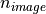 |
Computed |
The total number of pulses collected in forming the image |


Equation (5) from Reference 3 is used to compute the dwell time from the desired cross range/azimuth resolution:
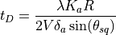
Note that WSF lets the user specify either the desired resolution or dwell time. In the later case WSF will use the above equation to solve for the achievable resolution given the dwell time.
The azimuth gain is the total number of pulses collected, which is just the collection time times the pulse repetition frequency:
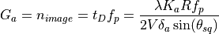
Range Processing Gain (Pulse Compression)¶
Variable |
WSF source |
Description |
|---|---|---|
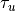 |
transmitter pulse_width |
The uncompressed pulse width. |
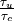 |
transmitter pulse_compression_ratio |
The pulse compression ratio. |
The range processing gain due to pulse compression is:
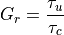
Various Forms of the Signal-to-Noise Equation¶
Substituting the results for 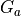 and  into the equation for
into the equation for  :
:
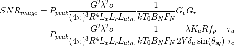
This is the form used by WSF to compute the return from an object with a radar cross section of  . This could be a target or a resolution cell.
. This could be a target or a resolution cell.
Additional forms of the equation are often seen in the literature. The remainder of this section will show how the above equation is equivalent.
In the case of a matched filter:
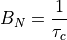
Substituting:
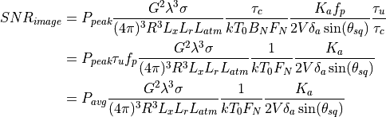
Where average power is defined to be:
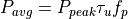
One form of interest is when the target is a bare resolution cell (i.e.: the ground). This is sometimes called the ‘clutter-to-noise ratio’, or CNR. Equation (23) of reference 2 defines the area of the resolution cell as:

where:
Variable |
WSF source |
Description |
|---|---|---|
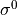 |
backscatter_coefficient |
The backscatter coefficient |
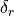 |
Range resolution (as computed from the effective pulse width) |
|
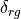 |
Range resolution in the ground plane |
|
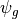 |
Grazing angle. The angle between the line-of-sight vector and the plane tangent to the surface at the point being viewed. |
Substituting:
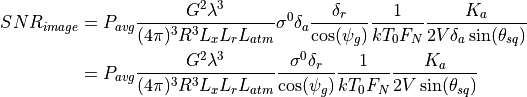
which is basically equivalent to the myriad of forms presented in Appendix B of reference 2 (however they always assumed broadside collection, so 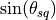 was always 1).
Creation of WSF Pseudo-Images¶
WSF does not produce true images, but rather produces pseudo-images that indicate the objects that are in the image, the number of resolution cells (pixels) occupied by the object, and the intensity of the object.
The user cues the system to the desired location and turns the system on. The model constructs a list of the targets that could potentially be in the image. The target list will encompass targets that are slightly outside the image region in order to account for the fact that a target may move into the image.
At periodic intervals (defined by ‘frame_time’, default of 1 second), the model compute and accumulate data for each of the targets from step 1. The results of these detection results will be accumulated, much as a SAR accumulates pulses. If the target is obscured by terrain during a given sample, it will not have any contributing pulses defined during that interval.
At some point, the SAR will be turned off. At that point the model will take the accumulated results and produce the pseudo-image (WsfImage) and send a message containing the image (WsfImageMessage) to those who have subscribed.
The following variables will be used in the following section:
Variable |
WSF source |
Description |
|---|---|---|
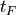 |
frame_time |
The update interval between samples when forming the image. |
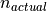 |
The actual number of pulses integrated. This may be different from n_image if the sensor was turned off before or after the required time. |
|
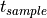 |
The length of the sample. This will be t_F for all but the final sample. |
|
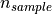 |
The number of pulses received during a sample. |
|
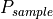 |
The received signal from a specific target during a sample. |
|
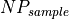 |
The number of resolution cells (pixels) covered by a specific target during a sample. |
|
optical_signature |
The optical signature of the target. |
|
The sum of the sampled received signals for a specific target. |
||
The sum of the sampled pixel counts for a specific target. |
||
The number of samples in which a specific target was visible (not obscured by the terrain). |
||
The reference signal that corresponds to a zero intensity in the output image. This would typically be minimum clutter-to-noise ratio. |
||
A normalizing value used to scale the received signals into a range of [0..1]. |
||
The expected signal-to-noise ratio of a return from single resolution cell. |
||
detection_threshold |
The minimum acceptable value for CNR for an image to be declared |
Step 1 computes the anticipated dwell time () and the number of pulses to be collected (). In addition, it calculates the anticipated value of
For each samples in step 2, the number of pulses received during the sample interval is:

The number of resolution cells (pixels) occupied by the target for a given sample is just projected area of the target (optical cross section) divided by the size of a resolution cell:
The received power per resolution cell from the target during the sample interval is:
Note that the noise has been removed from the accumulation. This must be done to account for the possibility that in some samples the target may not be visible, or that the actual dwell time may be longer or shorter what was initially computed. The other terms account for the fact that the internal routine that calculates computes the return for the entire target for the expected dwell time.
For each sample of a target in which the target is not obscured by terrain, the following is performed:
In step 3, the achieved clutter to noise ratio must be computed. It is done at this point because the actual number of pulses collected is now known (the user may choose to turn the system off before or after the time required).
If is greater than or equal to , the image will be declared to be acceptable and will contain the targets as processed below. If image is declared to be unacceptable, the image will be produced with no targets.
The reference signal level will be defined to be:
If the image is declared to be acceptable, the following will be produced for each target:
The number of pixels (resolution cells) occupied by the target. This will just be the average of the pixel counts from each sample where there target was not obscured by terrain:
The intensity of the pixel is then computed. The integrated return from a resolution cell (aka, clutter cell) represents the ‘zero’ intensity, or the return that will return a pixel value of zero.
A value less than zero is clamped to zero, while values greater than one are clamped to one.